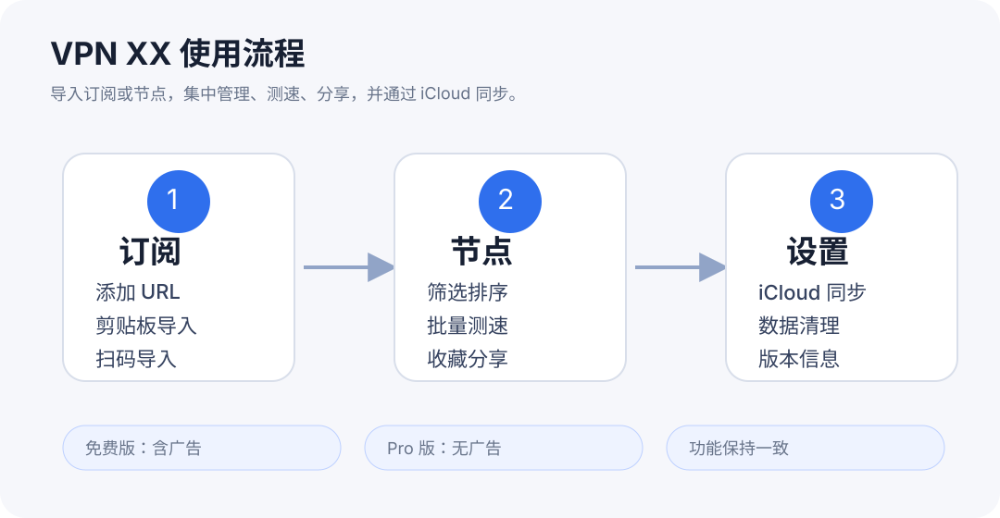
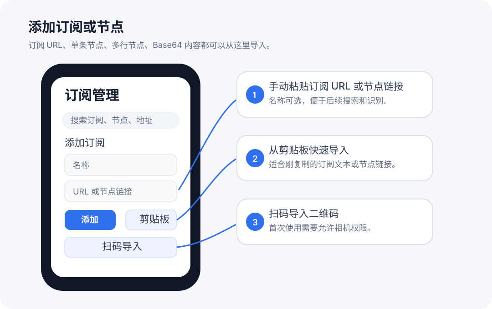
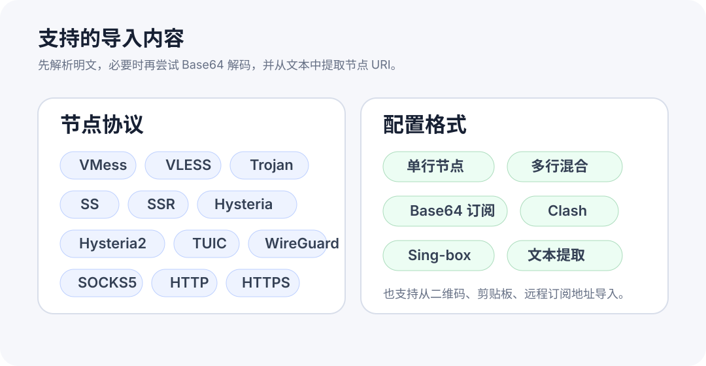
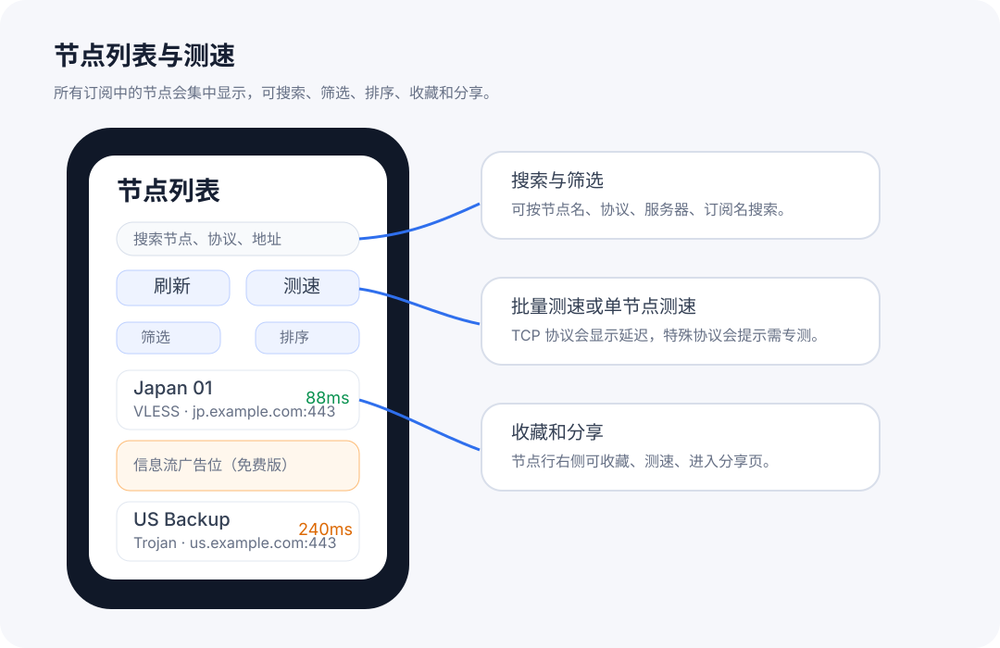
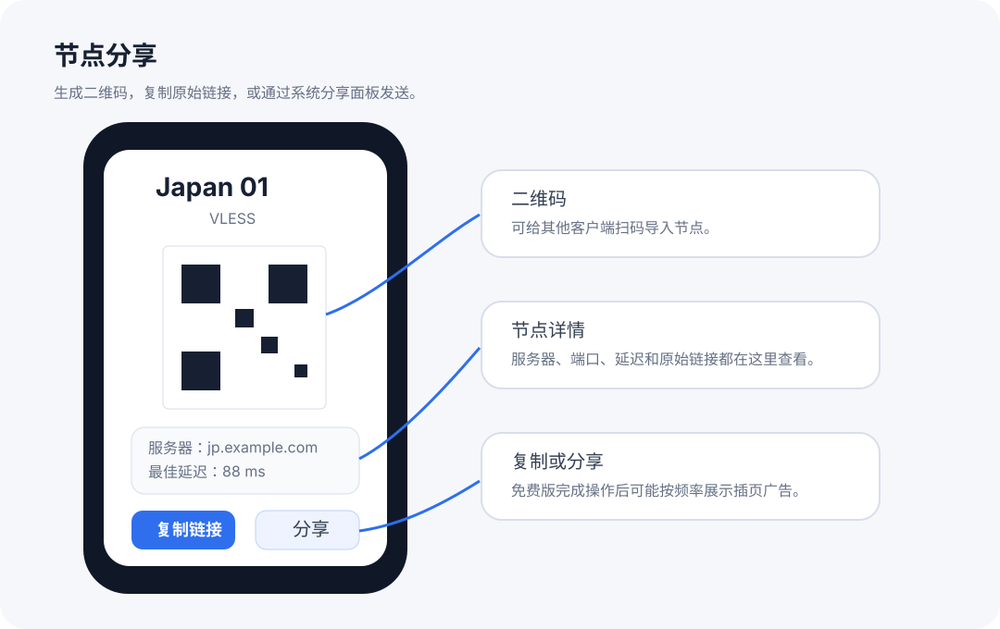
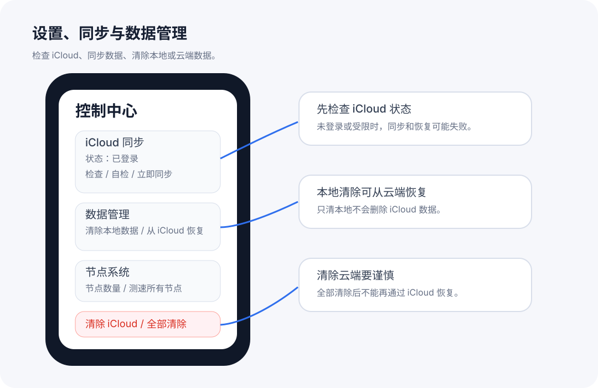
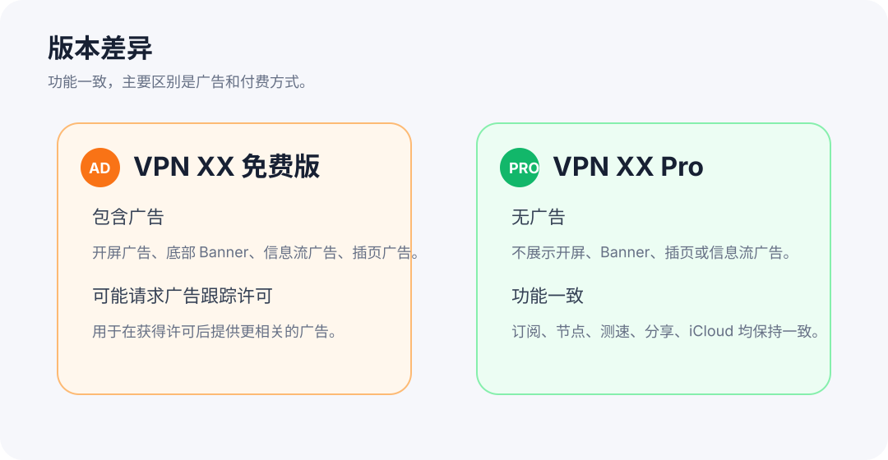

1
First Launch and Permissions
- The main workspace is organized around Subscriptions, Nodes, and Settings.
- Camera permission is needed only when you scan a QR code to import a subscription or node.
- VPN XX Free may request advertising consent or tracking permission where required before showing personalized ads.

2
Add Subscriptions or Nodes
- Add a name and paste a subscription URL, paste one or more proxy links, import from the clipboard, or scan a QR code.
- HTTP or HTTPS subscription URLs are saved as subscriptions and can be refreshed later; direct proxy links are parsed into nodes.
- Subscription URLs are data you provide. They are not App Store subscription purchases.

3
Supported Formats
- VPN XX parses plain text first, then tries Base64 decoding when needed.
- Supported node formats include VMess, VLESS, Trojan, Shadowsocks, SSR, Hysteria, Hysteria2, TUIC, WireGuard, SOCKS, HTTP, and HTTPS where applicable.
- The app can also extract recognizable node URIs from mixed text, Clash YAML, and sing-box JSON.

4
Refresh and Organize Nodes
- Refresh a subscription to fetch its latest node list from the URL you provided.
- Use protocol, status, favorites, and latency filters to keep large node lists manageable.
- Rename nodes or mark favorites so frequently used endpoints are easy to find.

5
Speed Test and Share
- Run batch tests or single-node checks to compare endpoint latency. Results depend on the provider, protocol, and current network.
- UDP or handshake-heavy protocols such as Hysteria, TUIC, and WireGuard may be marked as requiring a protocol-specific check.
- Share node details only with people or apps you trust because proxy links may contain credentials.

6
iCloud Sync and Data Management
- Enable iCloud sync if you want your subscription and node data to sync through your private iCloud account.
- Use Check iCloud, Self Test, and Sync Now to confirm that iCloud is available before relying on cross-device sync.
- Clear local data, restore from iCloud, clear iCloud data, or clear both only after you understand which copy will remain.

7
Free and Pro Versions
- VPN XX Free can show Yandex/AdMob ads through Yandex Smart Waterfall mediation, including banner, app open, interstitial, and native in-feed placements.
- VPN XX Pro is a paid download with no ads.
- The Pro target does not render ads, initialize ad SDKs for ad serving, or include the free edition ad IDs.

For help, contact balamanigill@gmail.com.
Free version includes Yandex Mobile Ads and Google AdMob ads; Pro is a paid download with no ads. iCloud sync for subscriptions and nodes.